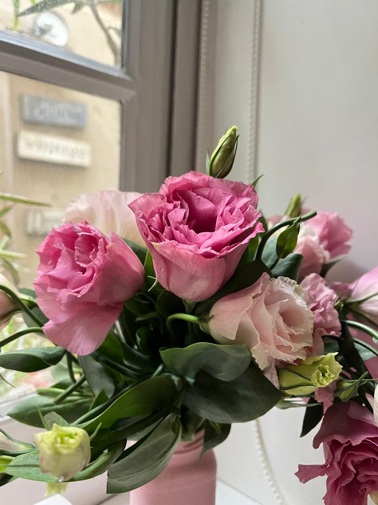
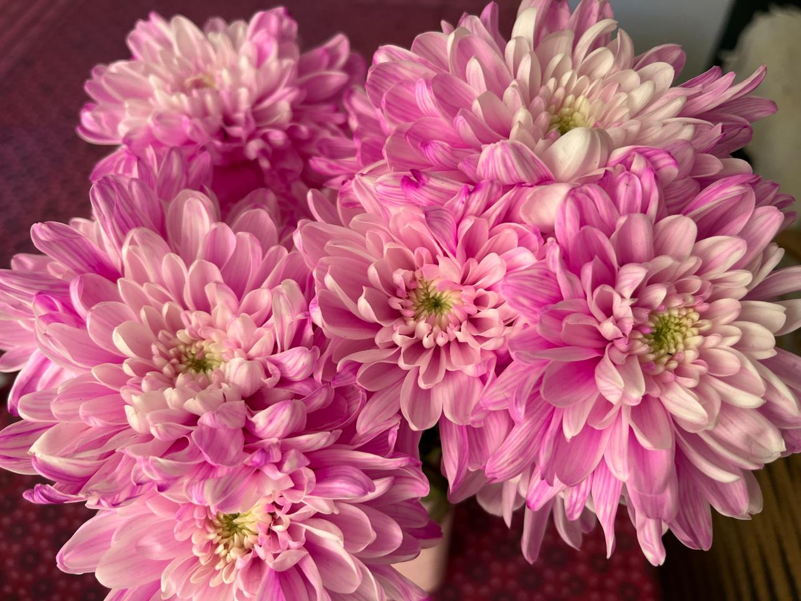

Rosas
Lisanthius o Rosa Japonesa

- Pétalos: Con capas delicadas y rizadas, muy parecidas a las rosas pero más finas
- Colores: Rosa, rosa claro, blanco, lila, amarillo y bicolor
- Hojas: Verde azulado, ovaladas y lisas
Crisantemos

- Pétalos: Muchos pétalos finitos y tupidos que forman una esfera
- Colores: Los crisantemos vienen en casi todos los colores, salvo el azul verdadero. Son de las flores con más variedad que hay.
- Dato curioso: en algunos países se asocian al Día de los Muertos, pero acá se regalan sin problema para cualquier ocasión.